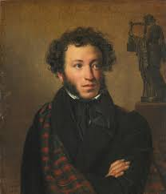

Александр Сергеевич Пушкин
Александр Пушкин начал писать свои первые произведения уже в семь лет. В годы учебы в Лицее он прославился, когда прочитал свое стихотворение Гавриилу Державину. Пушкин первым из русских писателей начал зарабатывать литературным трудом. Он создавал не только лирические стихи, но и сказки, историческую прозу и произведения в поддержку революционеров — за вольнодумство поэта даже отправляли в ссылки.